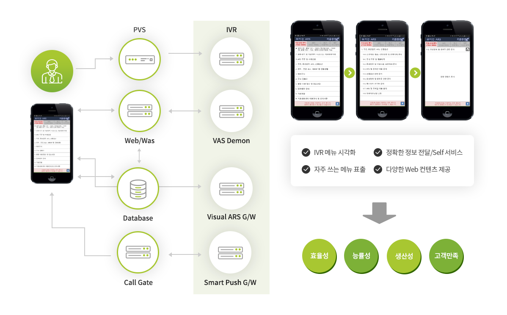

@@include('tab.html', {
"has_tab" : true,
"tab_list" : ["CC", "UC", "영상회의", "SI", "CLOUD", "부가 솔루션"],
"type" : "type6"
})
AAD100 (Arisys Auto DTMF Solution) : Visual-ARS DTMF Demon 솔루션
AAD100 솔루션은 전화기의 DTMF 톤을 인식하여 ‘보이는 ARS’ 에서 제공하는 서비스 메뉴기능이 원활하게 제공될 수 있도록 해주는 부가 솔루션입니다.
AAD100 솔루션(Visual-ARS DTMF Demon)은 보이는(Visual) ARS 솔루션과 연동하여 고객을 통하여 전달된 DTMF 다이얼톤을 감지, 고객이 ARS/IVR 메뉴를 듣는 것과 보는 것을 동시에 수행하여 고객의 셀프서비스 시간을 단축시키고, 각종 컨텐츠 및 공지, 참조 자료를 제공하여 보다 효과적인 ARS/IVR 서비스를 제공할 수 있도록 합니다.
